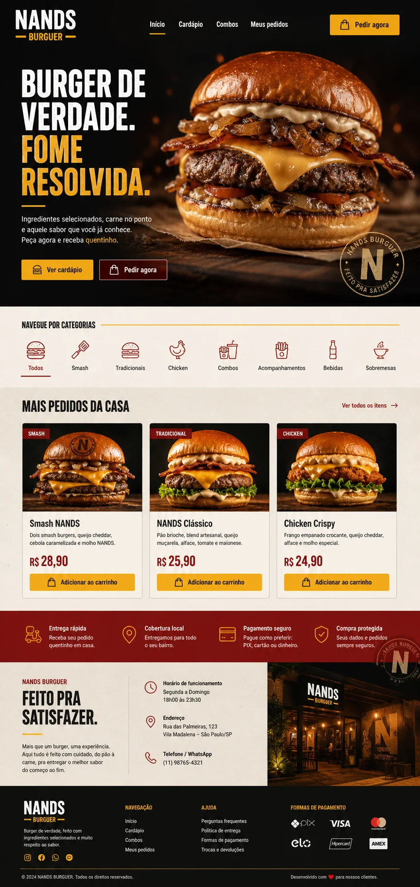

01
Backend
Base para construir rotas, validar dados, organizar regras de negócio e integrar sistemas.
- Python
- Flask
- Node.js
- APIs REST
- Autenticação
- Regras de negócio
Backend Júnior / Estágio · suporte de TI na prática
Uso minha vivência com suporte, sistemas e usuários para estudar backend de forma prática. Hoje direciono meus projetos para Python, APIs, banco de dados e automações que resolvem necessidades reais.
01 / Sobre
Sou Técnico de TI Júnior na Escola Primeira e curso Análise e Desenvolvimento de Sistemas na UNISA. Minha rotina em suporte me coloca em contato direto com usuários, sistemas, equipamentos e problemas que precisam ser entendidos antes de serem resolvidos.
Essa experiência fortalece minha comunicação, diagnóstico técnico, organização de demandas e atenção ao impacto real da tecnologia no dia a dia das pessoas. Ao mesmo tempo, estou direcionando minha carreira para backend, automação, banco de dados e desenvolvimento com Python.
Nos meus projetos acadêmicos e pessoais, pratico sistemas web, APIs, autenticação, regras de negócio, lógica de programação e persistência de dados. Meu objetivo é atuar em uma equipe onde eu possa contribuir com essa base prática de TI enquanto evoluo tecnicamente como desenvolvedor backend.
02 / Habilidades
Habilidades agrupadas por contexto de uso: desenvolvimento, dados, ferramentas e rotina de suporte.
01
Base para construir rotas, validar dados, organizar regras de negócio e integrar sistemas.
02
Estruturação de dados para apoiar cadastros, consultas, autenticação e operações do sistema.
03
Conhecimento suficiente para estruturar telas, consumir fluxos simples e entregar páginas responsivas.
04
Ferramentas usadas para versionar, documentar, publicar e organizar projetos de estudo e portfólio.
05
Experiência prática que ajuda a entender usuários, diagnosticar problemas e apoiar sistemas em operação.
03 / Projetos
Projetos escolhidos para mostrar raciocínio de backend: problema, solução, implementação, tecnologias e resultado.

Sistema Web para Hamburgueria
Tecnologias
02
Aplicação web backend
Tecnologias
03
Projeto de lógica e dados
Tecnologias
04 / Experiência
Atuação diretamente ligada à tecnologia, com suporte a usuários, manutenção de equipamentos, configuração de sistemas e resolução de problemas operacionais no ambiente escolar.
Experiência anterior que reforçou responsabilidade, comunicação com público, atenção a procedimentos e controle de processos — competências úteis para suporte técnico e trabalho em equipe.
Base administrativa com organização de dados, uso de sistemas digitais e atendimento interno, contribuindo para minha disciplina com registros, documentação e rotinas estruturadas.
05 / Formação
Fev/2024 · cursando
Formação voltada a desenvolvimento de software, banco de dados, análise de sistemas, lógica e fundamentos de engenharia.
Cursos recentes
Formação complementar pela Fundação Bradesco e Alura em Python, POO, modelagem e implementação de banco de dados, HTML, CSS, JavaScript e fundamentos de lógica.
Em prática
Aplicação dos estudos em sistemas web, APIs, autenticação, lógica de programação, modelagem de dados e documentação no GitHub.
06 / Contato
Estou aberto a estágio, vaga júnior ou oportunidade em TI onde eu possa contribuir com suporte técnico, backend, automação e organização de soluções.
kayknascimento21@gmail.com